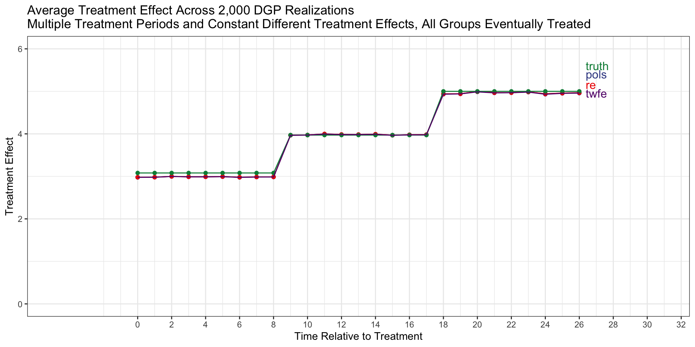
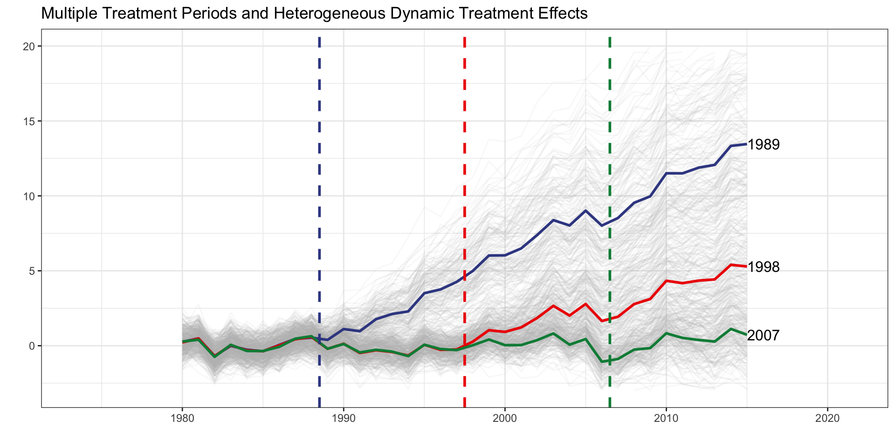

A Practical Guide to Extended Difference-in-Differences
Data Setup

1. Determine if there is a never treated cohort
n_years <- max(df_$year) - min(df_$year) + 1
never_treated <-
df_ %>%
ungroup() %>%
filter(w_it==0) %>%
group_by(unit) %>%
count(year) %>%
summarise(n = sum(n)) %>%
ungroup() %>%
mutate(never_treated = as.integer(n==n_years))
any_never_treated = max(never_treated$never_treated)==1
any_never_treated[1] TRUE2. Identify treatment cohorts (d*)
d_star <-
df_ %>%
select(unit,year,w_it) %>%
unique() %>%
filter(w_it==1) %>%
group_by(unit) %>%
filter(year==min(year)) %>%
select(-w_it) %>%
rename(d = year) %>%
dummy_cols("d") %>%
select(unit,starts_with("d_"))
last_treatment_year <- colnames(d_star)[length(colnames(d_star))] %>% gsub("d_","",.) %>% as.numeric(paste0(.))
colnames(d_star)[-1][1] "d_1989" "d_1998"3. Identify All Post-Treatment Years
If all groups are eventually treated, drop observations that occur on or after the last treatment date. This group has no untreated comparison group. Moreover, after this group is treated, it should not be utilized as a comparison group for the earlier treated cohorts.
f_star <-
with(df_,table(year,w_it)) %>% data.frame() %>%
filter(w_it==1 & Freq>0) %>%
select(f_star = year)
if (!any_never_treated) {
f_star <-
f_star %>%
filter(as.numeric(paste0(f_star)) < last_treatment_year) %>%
mutate(f_star = as.numeric(paste0(f_star))) %>%
mutate(f_star = factor(f_star))
}| f_star_1980 | f_star_1992 | f_star_2004 |
| f_star_1981 | f_star_1993 | f_star_2005 |
| f_star_1982 | f_star_1994 | f_star_2006 |
| f_star_1983 | f_star_1995 | f_star_2007 |
| f_star_1984 | f_star_1996 | f_star_2008 |
| f_star_1985 | f_star_1997 | f_star_2009 |
| f_star_1986 | f_star_1998 | f_star_2010 |
| f_star_1987 | f_star_1999 | f_star_2011 |
| f_star_1988 | f_star_2000 | f_star_2012 |
| f_star_1989 | f_star_2001 | f_star_2013 |
| f_star_1990 | f_star_2002 | f_star_2014 |
| f_star_1991 | f_star_2003 | f_star_2015 |
4. Define all cohort * post-treatment interactions
cohort_year_interactions <-
crossing(d = as.numeric(gsub("d_","",grep("d_",colnames(d_star),value=TRUE))),f = as.numeric(paste0(f_star$f_star))) %>%
mutate(value = as.numeric(f>=d)) %>%
mutate(f = paste0("f_",f)) %>%
mutate(d = paste0("d_",d)) %>%
spread(f,value) %>%
gather(f,value,-d) %>%
filter(value==1) %>%
arrange(d,f) %>%
select(-value) %>%
mutate(i = paste0("I(",d,"*",f,")"))
if (any_never_treated) {
df_ <-
df_ %>%
select(unit,year,y_it,starts_with("x_i"),w_it) %>%
left_join(d_star,"unit") %>%
mutate_at(vars(starts_with("d_")),~ifelse(is.na(.),0,.)) %>%
mutate(f = ifelse(year %in% f_star$f_star,year,NA)) %>%
dummy_cols("f",ignore_na=TRUE) %>%
mutate_at(vars(starts_with("f_")),~ifelse(is.na(.),0,.)) %>%
dummy_cols("year",ignore_na=TRUE)
} else {
df_ <-
df_ %>%
filter(year < last_treatment_year) %>%
select(unit,year,y_it,starts_with("x_i"),w_it) %>%
left_join(d_star,"unit") %>%
mutate_at(vars(starts_with("d_")),~ifelse(is.na(.),0,.)) %>%
mutate(f = ifelse(year %in% f_star$f_star,year,NA)) %>%
dummy_cols("f",ignore_na=TRUE) %>%
mutate_at(vars(starts_with("f_")),~ifelse(is.na(.),0,.)) %>%
dummy_cols("year",ignore_na=TRUE)
}| f | d_1989 | d_1998 |
|---|---|---|
| f_1989 | Y | - |
| f_1990 | Y | - |
| f_1991 | Y | - |
| f_1992 | Y | - |
| f_1993 | Y | - |
| f_1994 | Y | - |
| f_1995 | Y | - |
| f_1996 | Y | - |
| f_1997 | Y | - |
| f_1998 | Y | Y |
| f_1999 | Y | Y |
| f_2000 | Y | Y |
| f_2001 | Y | Y |
| f_2002 | Y | Y |
| f_2003 | Y | Y |
| f_2004 | Y | Y |
| f_2005 | Y | Y |
| f_2006 | Y | Y |
| f_2007 | Y | Y |
| f_2008 | Y | Y |
| f_2009 | Y | Y |
| f_2010 | Y | Y |
| f_2011 | Y | Y |
| f_2012 | Y | Y |
| f_2013 | Y | Y |
| f_2014 | Y | Y |
| f_2015 | Y | Y |
Estimation
Common Treatment Timing
| Method | Estimation Formula | Fixed or Random Effect |
|---|---|---|
| Two-Way Fixed Effects | feols(I(w : f*) + factor(time) | unit) |
Unit Fixed Effect |
| Pooled OLS | lm(I(w : f*) + factor(time) + d*) |
|
| Two-Way Mundlak | lmer(I(w : f*) + factor(time) + d* + (1|unit) |
Unit Random Effect |
Staggered Treatment Timing
| Method | Estimation Formula | Fixed or Random Effect |
|---|---|---|
| Two-Way Fixed Effects | feols(I(d* : f*) + factor(time) | unit) |
Unit Fixed Effect |
| Pooled OLS | lm(I(d* : f*) + factor(time) + d*) |
|
| Two-Way Mundlak | lmer(I(d* : f*) + factor(time) + d* + (1|unit) |
Unit Random Effect |
Staggered Treatment Timing with Covariate(s)
| Method | Estimation Formula | Fixed or Random Effect |
|---|---|---|
| Two-Way Fixed Effects | feols(I(w : d* : f*) + I(w : d* : f* : x_dm_d*) + factor(time) + I(factor(time) * x_dm_d*) | unit) |
Unit Fixed Effect |
| Pooled OLS | lm(I(w : d* : f*) + I(w: d* : f* : x_dm_d*) + factor(time) + I(factor(time) : x_dm_d*) + d* + x + I(d* : x_dm_d*)) |
|
| Two-Way Mundlak | lmer(I(w : d* : f*) + I(w: d* : f* : x_dm_d*) + factor(time) + I(factor(time) : x_dm_d*) + d* + x + I(d* : x_dm_d*) + (1|unit) |
Unit Random Effect |
ff_twfe <- as.formula(paste0("y_it ~",paste0(cohort_year_interactions$i,collapse="+"),"+ factor(year) | unit"))
fit_twfe <- feols(ff_twfe, data = df_)
ff_pols <- as.formula(paste0("y_it ~",paste0(cohort_year_interactions$i,collapse="+"),"+",paste0(grep("^d_",colnames(df_), value=TRUE),collapse="+"),"+ factor(year)"))
fit_pols <- lm(ff_pols,data = df_)
ff_re <- as.formula(paste0("y_it ~",paste0(cohort_year_interactions$i,collapse="+"),"+",paste0(grep("^d_",colnames(df_), value=TRUE),collapse="+"),"+ factor(year) + (1| unit)"))
fit_re <- lmer(ff_re, data = df_)| Estimator | Regression Call |
|---|---|
| TWFE | feols(y_it ~ I(d_1989 * f_1989) + I(d_1989 * f_1990) + I(d_1989 * f_1991) + I(d_1989 * f_1992) + I(d_1989 * f_1993) + I(d_1989 * f_1994) + I(d_1989 * f_1995) + I(d_1989 * f_1996) + I(d_1989 * f_1997) + I(d_1989 * f_1998) + I(d_1989 * f_1999) + I(d_1989 * f_2000) + I(d_1989 * f_2001) + I(d_1989 * f_2002) + I(d_1989 * f_2003) + I(d_1989 * f_2004) + I(d_1989 * f_2005) + I(d_1989 * f_2006) + I(d_1989 * f_2007) + I(d_1989 * f_2008) + I(d_1989 * f_2009) + I(d_1989 * f_2010) + I(d_1989 * f_2011) + I(d_1989 * f_2012) + I(d_1989 * f_2013) + I(d_1989 * f_2014) + I(d_1989 * f_2015) + I(d_1998 * f_1998) + I(d_1998 * f_1999) + I(d_1998 * f_2000) + I(d_1998 * f_2001) + I(d_1998 * f_2002) + I(d_1998 * f_2003) + I(d_1998 * f_2004) + I(d_1998 * f_2005) + I(d_1998 * f_2006) + I(d_1998 * f_2007) + I(d_1998 * f_2008) + I(d_1998 * f_2009) + I(d_1998 * f_2010) + I(d_1998 * f_2011) + I(d_1998 * f_2012) + I(d_1998 * f_2013) + I(d_1998 * f_2014) + I(d_1998 * f_2015) + factor(year) | unit, data = df_) |
| POLS | lm(y_it ~ I(d_1989 * f_1989) + I(d_1989 * f_1990) + I(d_1989 * f_1991) + I(d_1989 * f_1992) + I(d_1989 * f_1993) + I(d_1989 * f_1994) + I(d_1989 * f_1995) + I(d_1989 * f_1996) + I(d_1989 * f_1997) + I(d_1989 * f_1998) + I(d_1989 * f_1999) + I(d_1989 * f_2000) + I(d_1989 * f_2001) + I(d_1989 * f_2002) + I(d_1989 * f_2003) + I(d_1989 * f_2004) + I(d_1989 * f_2005) + I(d_1989 * f_2006) + I(d_1989 * f_2007) + I(d_1989 * f_2008) + I(d_1989 * f_2009) + I(d_1989 * f_2010) + I(d_1989 * f_2011) + I(d_1989 * f_2012) + I(d_1989 * f_2013) + I(d_1989 * f_2014) + I(d_1989 * f_2015) + I(d_1998 * f_1998) + I(d_1998 * f_1999) + I(d_1998 * f_2000) + I(d_1998 * f_2001) + I(d_1998 * f_2002) + I(d_1998 * f_2003) + I(d_1998 * f_2004) + I(d_1998 * f_2005) + I(d_1998 * f_2006) + I(d_1998 * f_2007) + I(d_1998 * f_2008) + I(d_1998 * f_2009) + I(d_1998 * f_2010) + I(d_1998 * f_2011) + I(d_1998 * f_2012) + I(d_1998 * f_2013) + I(d_1998 * f_2014) + I(d_1998 * f_2015) + d_1989 + d_1998 + factor(year), data = df_) |
| TWM | lmer(y_it ~ I(d_1989 * f_1989) + I(d_1989 * f_1990) + I(d_1989 * f_1991) + I(d_1989 * f_1992) + I(d_1989 * f_1993) + I(d_1989 * f_1994) + I(d_1989 * f_1995) + I(d_1989 * f_1996) + I(d_1989 * f_1997) + I(d_1989 * f_1998) + I(d_1989 * f_1999) + I(d_1989 * f_2000) + I(d_1989 * f_2001) + I(d_1989 * f_2002) + I(d_1989 * f_2003) + I(d_1989 * f_2004) + I(d_1989 * f_2005) + I(d_1989 * f_2006) + I(d_1989 * f_2007) + I(d_1989 * f_2008) + I(d_1989 * f_2009) + I(d_1989 * f_2010) + I(d_1989 * f_2011) + I(d_1989 * f_2012) + I(d_1989 * f_2013) + I(d_1989 * f_2014) + I(d_1989 * f_2015) + I(d_1998 * f_1998) + I(d_1998 * f_1999) + I(d_1998 * f_2000) + I(d_1998 * f_2001) + I(d_1998 * f_2002) + I(d_1998 * f_2003) + I(d_1998 * f_2004) + I(d_1998 * f_2005) + I(d_1998 * f_2006) + I(d_1998 * f_2007) + I(d_1998 * f_2008) + I(d_1998 * f_2009) + I(d_1998 * f_2010) + I(d_1998 * f_2011) + I(d_1998 * f_2012) + I(d_1998 * f_2013) + I(d_1998 * f_2014) + I(d_1998 * f_2015) + d_1989 + d_1998 + factor(year) + (1 | unit), data = df_) |
Results
| Treatment Cohort | Year | POLS | E-TWFE | E-TWM |
|---|---|---|---|---|
| 1989 | 1989 | 0.448 | 0.448 | 0.448 |
| 1989 | 1990 | 1.060 | 1.060 | 1.060 |
| 1989 | 1991 | 1.501 | 1.501 | 1.501 |
| 1989 | 1992 | 2.011 | 2.011 | 2.011 |
| 1989 | 1993 | 2.448 | 2.448 | 2.448 |
| 1989 | 1994 | 2.983 | 2.983 | 2.983 |
| 1989 | 1995 | 3.460 | 3.460 | 3.460 |
| 1989 | 1996 | 3.995 | 3.995 | 3.995 |
| 1989 | 1997 | 4.520 | 4.520 | 4.520 |
| 1989 | 1998 | 4.898 | 4.898 | 4.898 |
| 1989 | 1999 | 5.496 | 5.496 | 5.496 |
| 1989 | 2000 | 5.979 | 5.979 | 5.979 |
| 1989 | 2001 | 6.589 | 6.589 | 6.589 |
| 1989 | 2002 | 7.069 | 7.069 | 7.069 |
| 1989 | 2003 | 7.509 | 7.509 | 7.509 |
| 1989 | 2004 | 8.113 | 8.113 | 8.113 |
| 1989 | 2005 | 8.455 | 8.455 | 8.455 |
| 1989 | 2006 | 9.016 | 9.016 | 9.016 |
| 1989 | 2007 | 9.503 | 9.503 | 9.503 |
| 1989 | 2008 | 9.985 | 9.985 | 9.985 |
| 1989 | 2009 | 10.554 | 10.554 | 10.554 |
| 1989 | 2010 | 10.909 | 10.909 | 10.909 |
| 1989 | 2011 | 11.587 | 11.587 | 11.587 |
| 1989 | 2012 | 11.996 | 11.996 | 11.996 |
| 1989 | 2013 | 12.545 | 12.545 | 12.545 |
| 1989 | 2014 | 13.110 | 13.110 | 13.110 |
| 1989 | 2015 | 13.500 | 13.500 | 13.500 |
| 1998 | 1998 | 0.248 | 0.248 | 0.248 |
| 1998 | 1999 | 0.507 | 0.507 | 0.507 |
| 1998 | 2000 | 0.949 | 0.949 | 0.949 |
| 1998 | 2001 | 1.288 | 1.288 | 1.288 |
| 1998 | 2002 | 1.460 | 1.460 | 1.460 |
| 1998 | 2003 | 1.775 | 1.775 | 1.775 |
| 1998 | 2004 | 2.093 | 2.093 | 2.093 |
| 1998 | 2005 | 2.321 | 2.321 | 2.321 |
| 1998 | 2006 | 2.563 | 2.563 | 2.563 |
| 1998 | 2007 | 2.879 | 2.879 | 2.879 |
| 1998 | 2008 | 3.121 | 3.121 | 3.121 |
| 1998 | 2009 | 3.512 | 3.512 | 3.512 |
| 1998 | 2010 | 3.727 | 3.727 | 3.727 |
| 1998 | 2011 | 4.116 | 4.116 | 4.116 |
| 1998 | 2012 | 4.376 | 4.376 | 4.376 |
| 1998 | 2013 | 4.711 | 4.711 | 4.711 |
| 1998 | 2014 | 5.030 | 5.030 | 5.030 |
| 1998 | 2015 | 5.251 | 5.251 | 5.251 |
| Relative Time | Truth | POLS | E-TWFE | E-TWM |
|---|---|---|---|---|
| 0 | 0.397 | 0.348 | 0.348 | 0.348 |
| 1 | 0.794 | 0.784 | 0.784 | 0.784 |
| 2 | 1.191 | 1.225 | 1.225 | 1.225 |
| 3 | 1.589 | 1.650 | 1.650 | 1.650 |
| 4 | 1.986 | 1.954 | 1.954 | 1.954 |
| 5 | 2.383 | 2.379 | 2.379 | 2.379 |
| 6 | 2.780 | 2.777 | 2.777 | 2.777 |
| 7 | 3.177 | 3.158 | 3.158 | 3.158 |
| 8 | 3.574 | 3.542 | 3.542 | 3.542 |
| 9 | 3.971 | 3.888 | 3.888 | 3.888 |
| 10 | 4.369 | 4.308 | 4.308 | 4.308 |
| 11 | 4.766 | 4.745 | 4.745 | 4.745 |
| 12 | 5.163 | 5.158 | 5.158 | 5.158 |
| 13 | 5.560 | 5.593 | 5.593 | 5.593 |
| 14 | 5.957 | 5.942 | 5.942 | 5.942 |
| 15 | 6.354 | 6.412 | 6.412 | 6.412 |
| 16 | 6.751 | 6.742 | 6.742 | 6.742 |
| 17 | 7.149 | 7.134 | 7.134 | 7.134 |
| 18 | 9.500 | 9.503 | 9.503 | 9.503 |
| 19 | 10.000 | 9.985 | 9.985 | 9.985 |
| 20 | 10.500 | 10.554 | 10.554 | 10.554 |
| 21 | 11.000 | 10.909 | 10.909 | 10.909 |
| 22 | 11.500 | 11.587 | 11.587 | 11.587 |
| 23 | 12.000 | 11.996 | 11.996 | 11.996 |
| 24 | 12.500 | 12.545 | 12.545 | 12.545 |
| 25 | 13.000 | 13.110 | 13.110 | 13.110 |
| 26 | 13.500 | 13.500 | 13.500 | 13.500 |


prepare_extended_did_data <- function(df,covariates = NULL) {
any_never_treated <- function(df) {
n_years <- max(df$year) - min(df$year) + 1
never_treated <-
df %>%
ungroup() %>%
filter(w_it==0) %>%
group_by(unit) %>%
count(year) %>%
summarise(n = sum(n)) %>%
ungroup() %>%
mutate(never_treated = as.integer(n==n_years))
any_never_treated = max(never_treated$never_treated)==1
any_never_treated
}
get_d_star <- function(df) {
df %>%
select(unit,year,w_it) %>%
unique() %>%
filter(w_it==1) %>%
group_by(unit) %>%
filter(year==min(year)) %>%
select(-w_it) %>%
rename(d = year) %>%
dummy_cols("d") %>%
select(unit,starts_with("d_")) %>%
right_join(df %>% select(unit) %>% unique(),"unit") %>%
mutate_at(vars(starts_with("d_")),~ifelse(is.na(.),0,.)) %>%
mutate(never_treated = as.integer(rowSums(.[,-1])==0))
}
get_f_star <- function(df) {
with(df,table(year,w_it)) %>% data.frame() %>%
filter(w_it==1 & Freq>0) %>%
select(f_star = year)
}
get_cohort_year_interactions <- function(df,d_star, f_star) {
crossing(d = as.numeric(gsub("d_","",grep("d_",colnames(d_star),value=TRUE))),f = as.numeric(paste0(f_star$f_star))) %>%
mutate(value = as.numeric(f>=d)) %>%
mutate(f = paste0("f_",f)) %>%
mutate(d = paste0("d_",d)) %>%
spread(f,value) %>%
gather(f,value,-d) %>%
filter(value==1) %>%
arrange(d,f) %>%
select(-value) %>%
mutate(i = paste0("I(",d,"*",f,")"))
}
is_there_any_never_treated <- df %>% any_never_treated()
d_star <- df %>% get_d_star()
d_star_names <- colnames(d_star)[-grep("unit|never_treated",colnames(d_star))]
f_star <- df %>% get_f_star()
cohort_year_interactions <- df %>% get_cohort_year_interactions(., d_star = d_star, f_star = f_star)
df_final_ <-
df %>%
select(unit,year,y_it,starts_with("x_i"),w_it,covariates) %>%
left_join(d_star,"unit") %>%
mutate_at(vars(starts_with("d_")),~ifelse(is.na(.),0,.)) %>%
mutate(f = ifelse(year %in% f_star$f_star,year,NA)) %>%
dummy_cols("f",ignore_na=TRUE) %>%
mutate_at(vars(starts_with("f_")),~ifelse(is.na(.),0,.)) %>%
dummy_cols("year",ignore_na=TRUE) %>%
select(-f)
if (!is.null(covariates)) {
for (.x in covariates) {
covariate_means <-
df_final_ %>%
select_at(vars(unit,.x,starts_with("d_"))) %>%
pivot_longer(cols = starts_with("d_")) %>%
filter(value==1) %>%
rename(cohort = name) %>%
select(-value) %>%
group_by(cohort) %>%
summarise_at(vars(.x),mean,na.rm=TRUE) %>%
mutate() %>%
gather(covar,mean,-cohort) %>%
mutate(covar = paste0(covar,"_dm")) %>%
unite(covar,covar,cohort) %>%
spread(covar,mean)
tmp <-
df_final_ %>%
select(unit,year,tmp = .x) %>%
left_join(covariate_means, by = character()) %>%
mutate_at(vars(colnames(covariate_means)),~(.data$tmp - .)) %>%
select(unit,year,contains("_dm_"))
df_final_ <-
df_final_ %>%
left_join(tmp,c("unit","year"))
}
df_final <- df_final_
} else {
df_final <- df_final_
ff_twfe <- as.formula(paste0("y_it ~",paste0(cohort_year_interactions$i,collapse="+"),"+ factor(year) | unit"))
ff_pols <- as.formula(paste0("y_it ~",paste0(cohort_year_interactions$i,collapse="+"),"+",paste0(grep("^d_",colnames(df_final), value=TRUE),collapse="+"),"+ factor(year)"))
ff_re <- as.formula(paste0("y_it ~",paste0(cohort_year_interactions$i,collapse="+"),"+",paste0(grep("^d_",colnames(df_final), value=TRUE),collapse="+"),"+ factor(year) + (1| unit)"))
}
return(list(df = df_final, ff_pols = ff_pols, ff_twfe = ff_twfe, ff_re = ff_re))
}